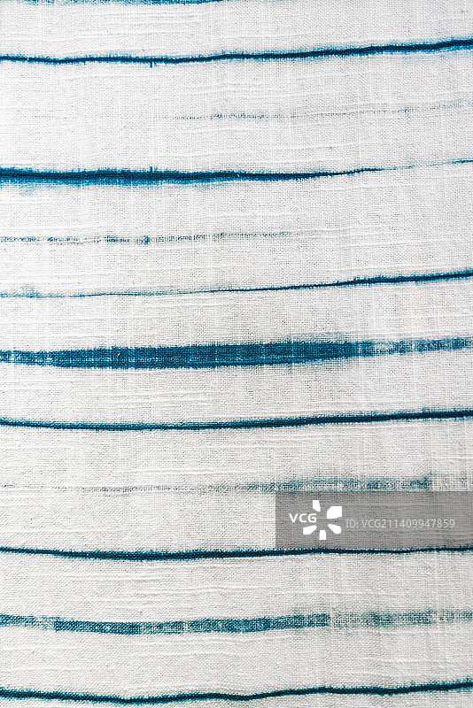
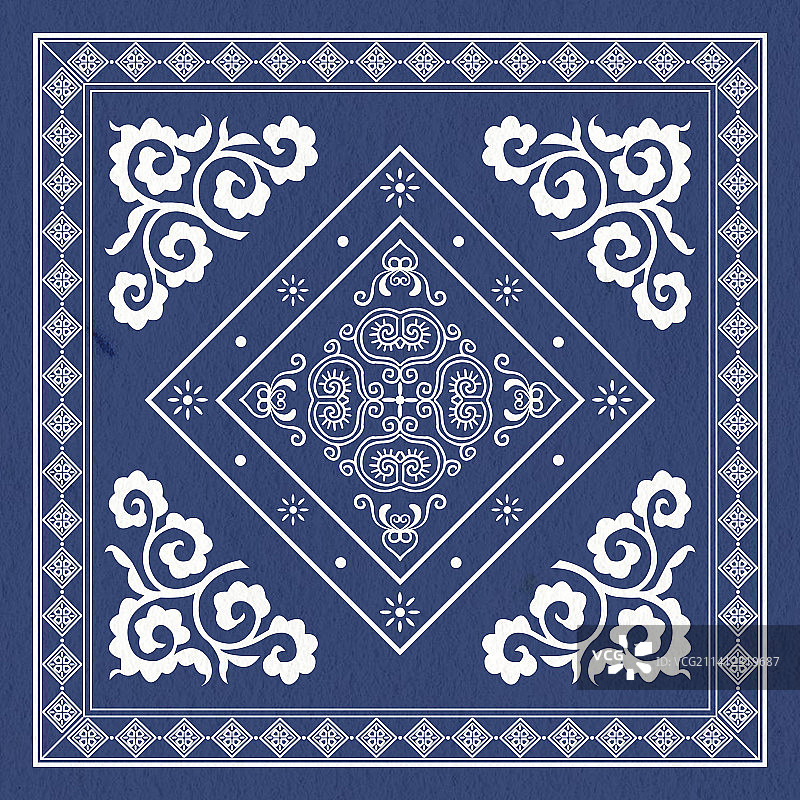
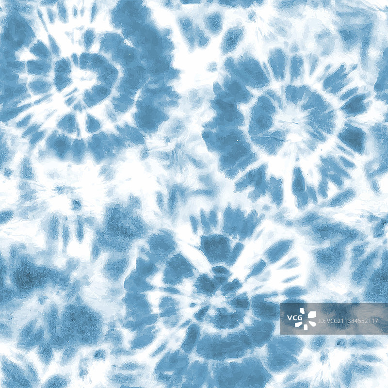
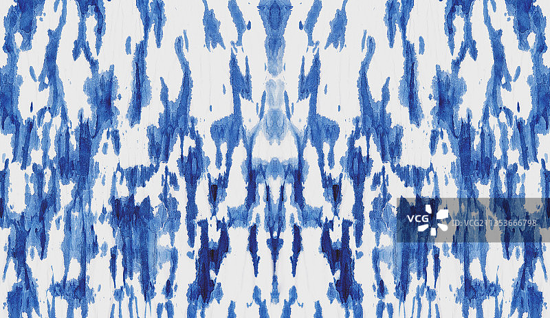
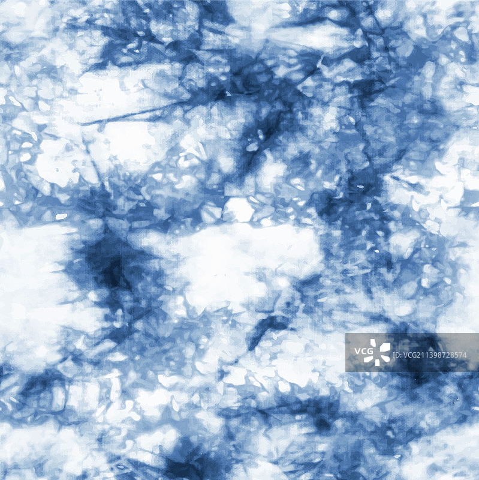
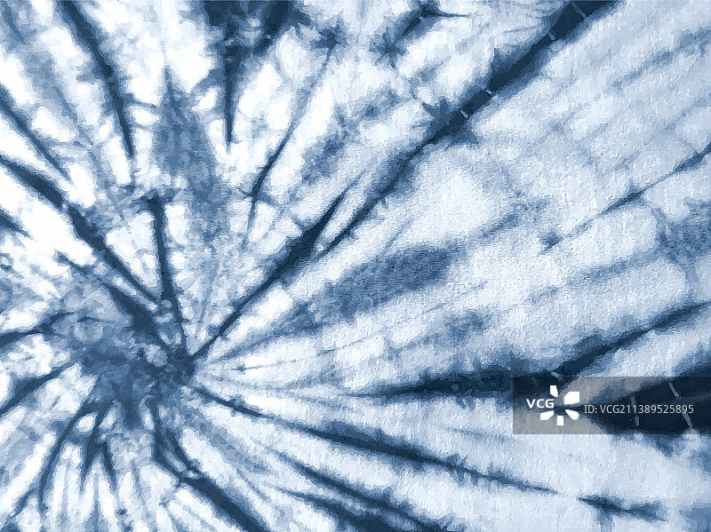
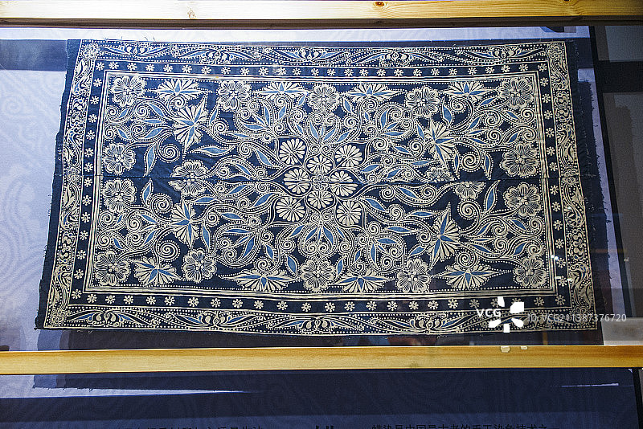
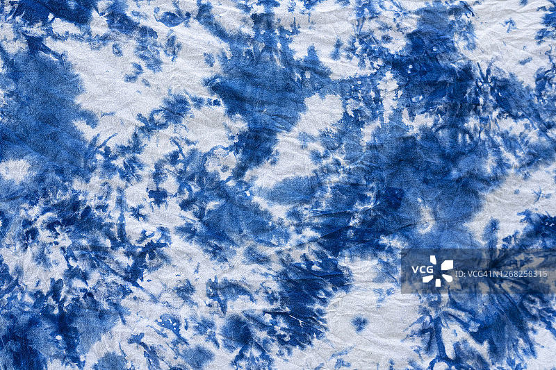
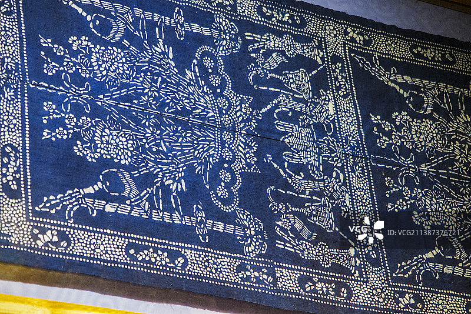
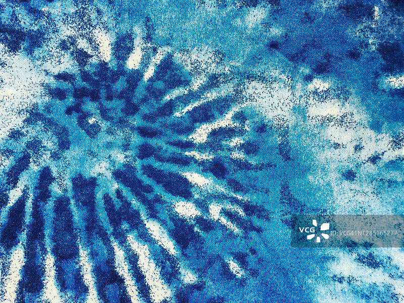

AI驱动的非遗文化数字平台
蓝染纹样
智能生成系统
融合非遗文化数字化展示与AI纹样生成技术，以人工智能对传统蓝染工艺进行再创作与数字传播，实现传统工艺的现代化表达
扎染
蜡染
夹染
今日纹样
每日精选传统蓝染纹样，探索非遗之美

查看详情
冰裂纹·扎染
云贵地区 · 传统技法

查看详情
螺旋纹·蜡染
湘西苗绣 · 民间传承

查看详情
水波纹·夹染
江苏南通 · 精致工艺
六大核心功能
从AI生成到数字展览，全方位蓝染非遗数字化平台
01
AI纹样生成系统
输入关键词如「扎结法+冰裂纹」，AI智能生成蓝染风格纹样图像，支持多种工艺风格与参数调节
02
纹样数据库
收录传统蓝染纹样数字档案，按工艺类型、地域来源、文化寓意分类，每件纹样配有详实背景资料
03
非遗知识百科
涵盖扎染、蜡染、夹染工艺介绍，非遗传承人档案与视频，以及中国非遗地图地域分布可视化
04
互动体验系统
蓝染绘图小游戏模拟扎染步骤，AI染布模拟器可自由调节布料、染料浓度与扎法密度
05
数字展览传播
线上展览馆滑动浏览纹样，纹样故事卡片可一键分享，每日推荐系统推送精选内容
06
文创展示转化
蓝染围巾、服装、布艺等文创产品展示，支持用户纹样至文创延展设计的AI定制概念功能
📍 非遗文化地域分布
非遗地图
覆盖26个地域，12位代表性传承人，探索中国蓝染文化的地理脉络
🏔️ 云贵高原
扎染发源地
🌿 湘西苗寨
蜡染传承地
🏯 江苏南通
夹染工艺
🏘️ 浙江温州
靛蓝染坊
3,200+
传统纹样收录
48,000+
AI生成纹样
12
非遗传承人
26
覆盖地域
灵感广场
来自用户的AI创意纹样作品，灵感碰撞与交流

蓝染爱好者·小雅

扎染传习人·老林

设计师·阿敏
纹样收藏家·阿杰

非遗研究者·小梅

手工艺人·大福

文化传播者·小华

文创设计师·小陈